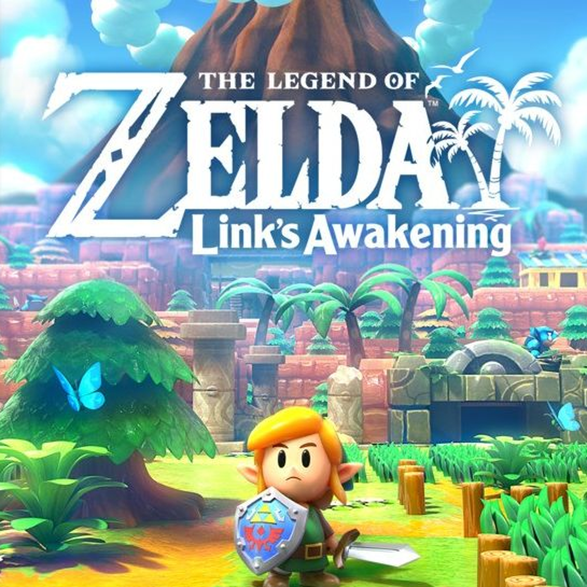
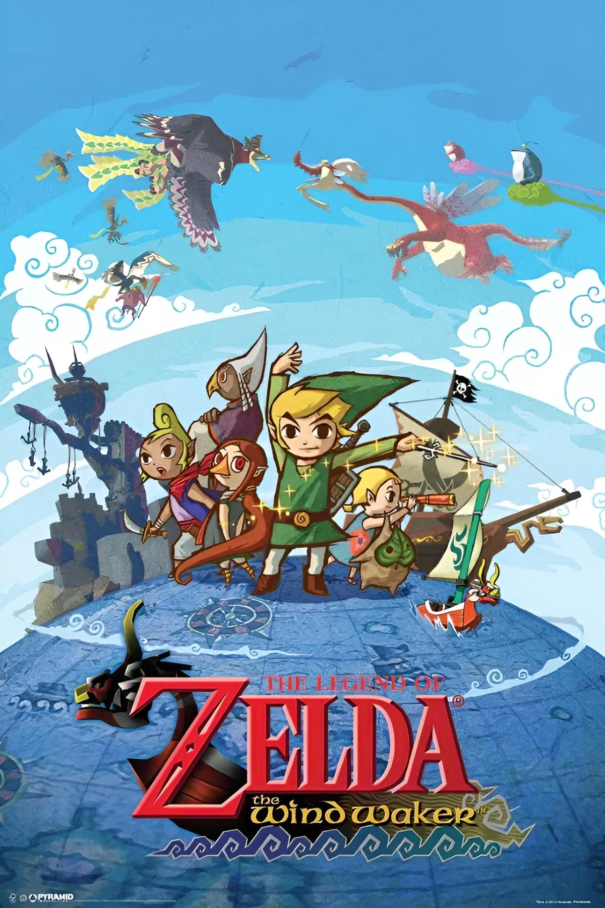
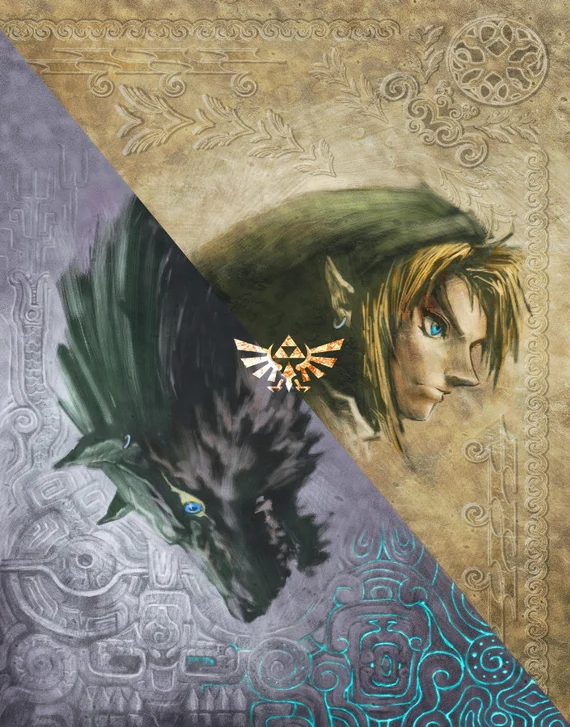
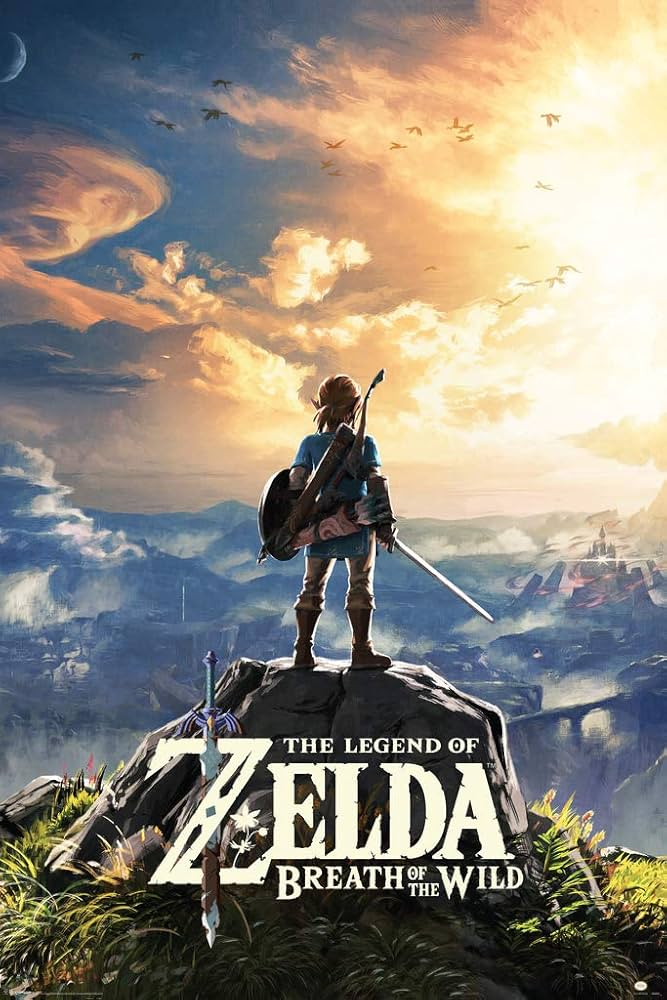

Overview
The lengend of zeld is one of the most iconic video game franchises in history, known for ita immersive story telling vast open worlds, and innovative gameplay, sinc its debut in 1986, zelda games have continued to captivate players across generations.
timeline of games
1986 - the legend of zelda
The game that started it all, introducing players to the vast world of hyrule and the langendary hero, link
1991 - A link to the past
A top_down classic that set the standard for future zelda titles, refining the gameplay and introducting new machanics
1998 - ocarina of time
Often considered on of the greatest games ever made, ocarina of time brought zlda into the 3D realm with stunning visuals and groundbreaking gameplay.
2017 - Breath of the wild
A revolutionary open world experience, breath of the wild redefined the boudaries of exploration and adventure.
Iconic Games
Link's awakening

An unusual entry in the
series, set on a mysterious
island with unique
characters and storylines
wind waker

With its distinctive cel...
shaded art style, wind
waker stands out visually
while delivering a
fantastic seafaring
adventure
Twilight Princess

A darker and more mature
takes on the zelda universe,
with realistic graphics
and a gripping story
Breath of the wild
